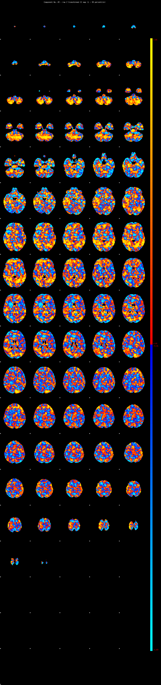
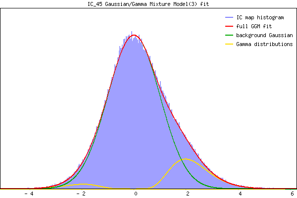

IC_45 Mixture Model fit
Means : 0.000000 2.235159 -1.992684
Vars : 1.000000 0.946997 0.552199
Prop. : 0.854989 0.124394 0.020617
This page produced automatically by MELODIC Version 3.15 - a part of FSL - FMRIB Software Library.